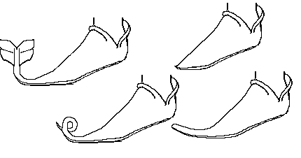
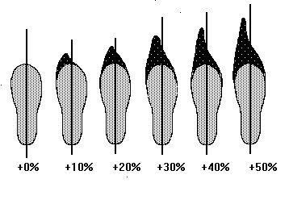
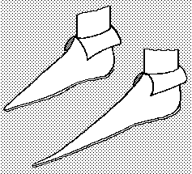
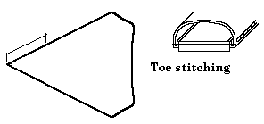
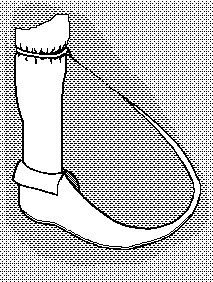

Shoes with long toes began to be worn in western Europe in the 12th century. The origins of these shoes have been, by tradition, placed on the feet of Count Fulk of Anjou, and a need to cover up some sort of foot deformity. This tradition is telling in its Euro-centricity, since we might with more reason speculate that since a continuous tradition of pointy-toed footwear existed in the Near/Middle East since the Sumerians (and remains up to today), perhaps the 12th century Crusaders were influenced by what they found beyond the sea. This latter speculation becomes even more plausible when we examine the contemporary introduction of the bead welt/rand between the uppers and soles to protect the thread (also found in some Middle Eastern footwear well before the period in question).
A number of works on the history of costuming show pictures for what they refer to as "pigases", which seem to find their origins in the mention of pigaci� and pigati� in Ordericus Vitalis, and the purported term "pigache" in French. These referred to shoes points on them, and specifically the shoes that started appearing at the beginning of the 12th century with long points. But even the longest of these didn't seem to have points that were more than half again the length of the foot, and and most often reaching no more than two inches beyond the longest toe in the shoe. The longer shoes were stuffed with moss, hair or wool.

Also in the costuming histories, there is mention of bizarre variations of the stuffed pigache toe, such as the "fishtail", "serpent" and "scorpion" shoe, a fad begun by Robert Cornard in the Court of William Rufus. I don't know of any proof that these shoes actually existed, but purportedly they were quite the thing among the nobility for a short while. This may simply be a misunderstanding of the simple long toed shoes so popular in the first decades of the 12th century.
While the pointed toe style remained popular until the 13th century, and never truly faded completely, it maintained a fairly standard length of not exceeding 10% of the foot's length. The pointed styles were really only worn by the aristocracy, the common people wore round toed shoes.

There is some thought that the long toed shoe style hadn't really ever died out, but had instead moved gradually eastward, until in the mid-14th century it was "discovered" by western merchants who were shipping into the Baltic by that time. They brought what would eventually be termed the "Poland fashion", or Poulaine toe style. The term Poulaine, as in souliers a la poulaine, "Shoes in the Polish fashion", referred to the the long pointed beak of the shoe, not the shoe itself. The shoe was referred to as a Crakows. The term "poulaine" appeared in English by at least 1464 (according the the OED2). Crakow appears in English by c1367. The points were also referred to as "pikes" (by 1450) and "piggains" (which may be derived from "piggen" (a kind of pail with a long handle) or perhaps from "pigache" above).
The term "poulaine" is sometimes used to refer to the long-toed shoe in general, while in other sources the term is specifically refer to those shoes whose length was 30% beyond that of the wearer's foot.

As can be seen in such works as the Les Tres Riches Heures du Duc du Berry,
long toed shoes were worn on a variety of boots and shoes.
Eventually, the Church rallied against the extravagance and implied phallic sexuality of
the occasionally upturned long stuffed toes, and railed against them as an example of
declining morality. Even so, the long toed shoes lasted in the west far longer the
second time, only disappearing when, almost overnight, they were replaced by the next shoe
fad in the late 1400s - the blunt, wide Kuhmaul, "cow mouth", also
known as the "bear paw" shoe. This transition took place, roughly about
the time that the spread of welted shoes began to spread out from Germany, and virtually
all Kuhmaul's are welted (I have seen a very few that were not, possibly examples of old
style shoemakers trying to imitate the new style).
There is some disagreement among shoe people about the construction of long toed shoes, as made in the 15th century. The opinions differ between whether they were made with two part soles, or single part soles. The foot pattern is fairly distinctive, with a wide forepart, narrowing to a waist of about an inch or so, and widening slightly at the heel. Because many examples of the two part sole have been found, it has been suggested that it was a regular means of construction or repair to join the forepart and heel at the waist, by the same invisible (flesh/edge) sewing, after the shoe was turned. However, other examples found suggest that this may have simply been a repair technique, and that usually shoes were made with a single piece sole. Often these had a clumped sole attached to them.
The very front of the vamp, and the forepart were not sewn together, while the shoe was inside out, for the past few inches of the longer toes. Also to help make the shoe easy to turn, these were stitched shut with a stabbed seam that went through the entire width of the sole.

There is a popular belief, spread regularly by the modern media, that "in the Middle Ages, pointed toed shoes were so long that they had to chain them to their knees". While (some) people in the Middle Ages wore their pointed shoes long, and it is conceivable that a few excessive style trailblazers may have worn them that long, at this point I know of no contemporary evidence that it was so.

The earliest I can suggest appears in John Stow's 1598 The survey of London containing the original, increase, modern estate and government of that city, methodically set down : with a memorial of those famouser acts of charity, which for publick and pious vses have been bestowed by many worshipfull citizens and benefactors : as also all the ancient and modern monuments erected in the churches, not only of those two famous cities, London and Westminster, but (now newly added) four miles compass (p.131) where he says:
"In Distar Lane, on the North side thereof, is the Cordwainers or Shoemaker's Hall, which company were made a brotherhood or fraternity in the 11th of Henry IV. Of these Cordwayners I read, that since the fifth of Richard II. (when he took to wife Anne, daughter to Veselaus, King of Boheme), by her example the English people had used piked shoes, tied to their knees with silken laces, or chains of silver or gilt, wherefore in the fourth of Edward IV. it was ordained and proclaimed, that beaks of shoone and boots, should not pass the length of two inches, upon pain of cursing by the clergy, and by Parliament to pay 20 shillings for every pair. And every cordwainer that shod any man or woman on the Sunday, to pay 30 shillings."
As an aside, Act 4 of Edward IV c.7 actually says
"Nulle persone Cordewaner ou Cobeler .. face.. ascuns soler galoges ou husend oveqe ascun pike ou poleine qe passera la longuer ou mesure de deux poutz."
Stowes reference was followed in 1614 by William Camden's Remaines concerning Brittaine: but especially England, and the inhabitants thereof: their languages, names, syrnames, allusions, anagrammes, armories, moneys, empresses, apparell, artillerie, wise speeches, prouerbes, poesies, epitaphs (pp.232-3), where he quotes from the Eulogium historiarum... a monacho quodam malsmburiensi, III, (1362, pp.230-231).
"...Their shoes, which they call 'Crakows', have curved peakes more than a finger in lengths, fastened to the knees with chains of gold and silver, resembling the claws of demons rather than ornaments for human beings. Wearers of such attire ought to be considered players and worthless fellows rather than barons, actors rather than knights, buffoons rather than squires...
However, the original 1362 diatribe that he is printing says instead:
"...Their shoes, which they call 'Crakows', have curved peakes more than a finger in lengths, resembling the claws of demons rather than ornaments for human beings. Wearers of such attire ought to be considered players and worthless fellows rather than barons, actors rather than knights, buffoons rather than squires..."
Unverified anecdotal evidence says there is such a shoe on on a wall painted in Sweden by [Albertus pictor] ( fl c. 1460; d after 1509), and in the illustrations of the Encyclopedie Medieval by Viollet-le-Duc.
What does this ultimately mean? It means that it's possible that once more someone has taken an utter fabrication, or a miniscule example of a behavior and blown it so far out of proportion as to make it ridiculous.
Return to Contents
Footwear of the Middle Ages - Long toed shoes, Copyright � 1996, 1999, 2001 I.
Marc Carlson.
This page is given for the free exchange of information, provided the author's name is
included in all future revisions, and no money change hands, other than as expressed in
the Copyright Page.